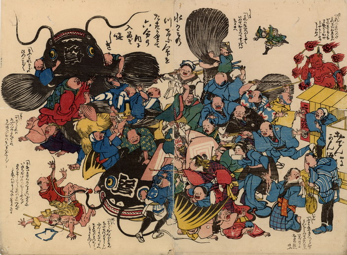

← 图鉴索引

額に「江戸」「信州」とある2匹の大鯰が、人々に襲われている。
出典：親書誌：U426_nichibunken_0207：〔江戸鯰と信州鯰；エドナマズトシンシュウナマズ〕／日付：2010／資源識別子：U426_nichibunken_0207_0001_0000
Copyright (c)2010- International Research Center for Japanese Studies, Kyoto, Japan. All rights reserved.